Mobile Application Development
The Good, the Bad and the Uglies....
Created by Davy De Waele / @ddewaele
Table of contents
- History
- What is a mobile application
- Different ways of developing mobile applications
- Case studies
- Conclusions & QA
History
It all started with .....
History
iPhone was released on June 29, 2007 with the plans to have it "run applications created with Web 2.0 Internet standards"
History
“Developers can create Web 2.0 applications which look and behave just like the applications built into iPhone, and which can seamlessly access iPhone’s services, including making a phone call, sending an email and displaying a location in Google Maps. Third-party applications created using Web 2.0 standards can extend iPhone’s capabilities without compromising its reliability or security.”
History
- The iPhone SDK was officially announced and released on March 6, 2008
- SDK is a set of tools based on the existing development tools for mac
- It allows developers to develop native applications for the iPhone and iPod Touch, then test them in an "iPhone simulator".
History
- Android 1.0 SDK, release 1 was announced on 23 September 23, 2008
- First Android phone, the T-Mobile G1 was released on October 22, 2008 together with the Android Market.
- Funny in retrospect :
“There are already over 50 apps available in Android Market today.”
What is a mobile app ?

"App" was Word of the Year in 2010
an abbreviated form of application, a software program for a computer or phone operating system
A software application designed to run on smartphones, tablet computers and other mobile devices. They are usually available through application distribution platforms, which are typically operated by the owner of the mobile operating system
Characteristics
What are the characteristics of an app ?
- Software
- Distribution
- Mobile devices
- Mobile operation system
1. Software
- Mobile applications have traditionally been written for a particular mobile platform
- This is what we call Native applications
- In the early days, open web standards weren't up to standard to facilitate mobile development
2. Distribution
Mobile platforms like Android, iOS, Windows Phone and Blackberry come with their own distribution platforms
 |
|
 |
3. Mobile Devices
Software that needs to run on a range of mobile devices.
If you're only targeting iOS you're in luck.
3. Mobile Devices
Android however is a different story...

Mobile Development is hard
Regardless on how you develop mobile applications, some common problems are :
- Multiple platforms
- Multiple form factors
- Multiple screens sizes / resolutions
- Multiple webkit versions
Multiple platforms
When building mobile applications, you'll potentially need to target multiple platforms
Multiple platforms
Even for the same platform there might be differences. If this is iOS 6
Multiple platforms
Then this must be iOS 7
Multiple platforms
Seriously.....
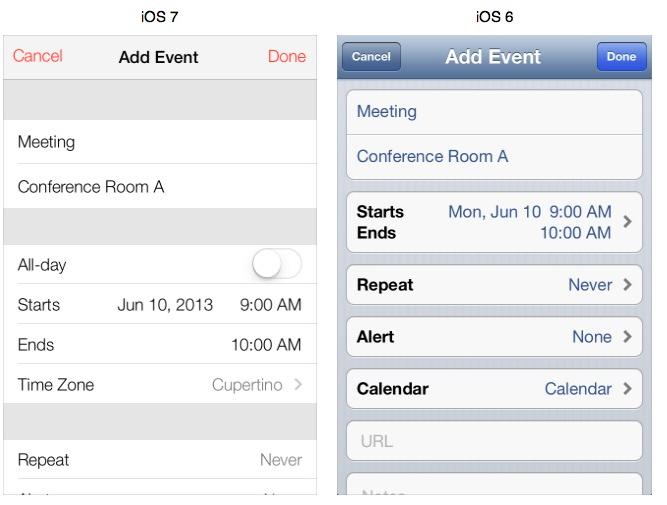Multiple platforms
But iOS / Android / Windows remain very distinct platforms
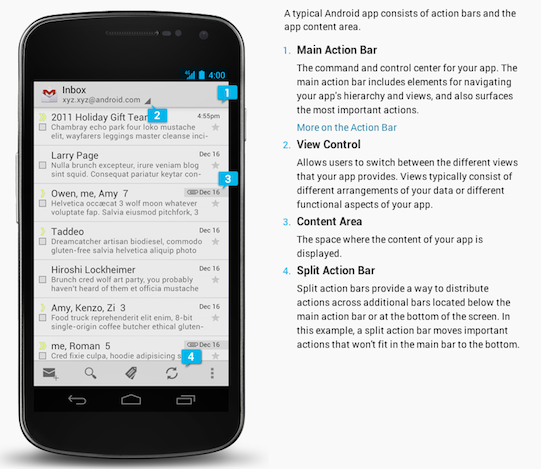Multiple platforms
Android Holo Look

Multiple platform versions
For each particular platform, multiple versions of that platform are in the running
 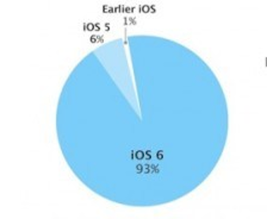
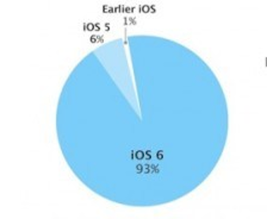
Multiple form factors

Multiple form factors
If you expect your application to run on different form factors (phones / tablets / TVs / ...) you have to ask yourself
- Deploy a single UI that stretches or scales-up on larger form factors tablets
- Deploy a tablet-optimized UI that takes advantage of larger tablet screens
Multiple form factors
Great example of a scale-up-UI (the Twitter app on a tablet not so long ago)
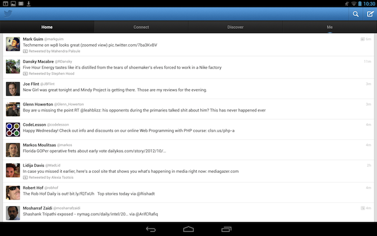As you can see, the UI is simply stretched on the additional screen real-estate.
Multiple form factors
Tablet-optimized UI (the new Twitter app on a tablet)
As you can see, the UI is now optimized for the additional screen real-estate.
Multiple screen sizes
When building mobile applications, you'll be confronted with multiple screens sizes. ex: Samsung currently ships the following displays :
| 2.8 | 3.14 | 3.2 | 3.4 | 3.5 |
| 3.6 | 3.65 | 3.7 | 3.97 | 4 |
| 4.2 | 4.27 | 4.3 | 4.5 | 4.52 |
| 4.65 | 4.8 | 5 | 5.3 | 5.5 |
| 5.8 | 6.3 | 7 | 7.7 | 8 |
| 10 | 10.1 |
Multiple screen resolutions
Same with the resolutions:
| QVGA (240x320) | 480x640 | WQVGA400 (240x400) | WQVGA432 (240x432) | HVGA (320x480) |
| WVGA800 (480x800) | WVGA854 (480x854) | 600x1024 | 640x960 | WVGA800** (480x800) |
| WVGA854** (480x854) | WVGA800* (480x800) | WVGA854* (480x854) | 600x1024 | 1024x600 |
| WXGA (1280x800) | 1024x768 | 1280x768 | 1536x1152 | 1920x1152 |
| 1920x1200 | 2048x1536 | 2560x1536 | 2560x1600 |
Multiple WebKit versions
On Android :
| Android 2.1 | 530.17 |
| Android 2.2/2.3 | 533.1 |
| Android 3.2.1 | 534.13 |
| Android 4.x | 534.30 |
| 18.0.1025.166 | 535.19 |
| 25.0.1364.123 | 537.22 |
| 26.0.1410.58 | 537.31 |
| 27.0.1453.90 | 537.36 |
| 28.0.1500.94 | 537.36 |
| 29.0.1547.59 | 537.36 |
Multiple WebKit versions
On iOS :
| 6.x | 8536.25 | 536.26 |
| 5.x | 7534.48.3 | 534.46 |
| 4.2 - 4.3 | 6533.18.5 | 533.17.9 |
| 4.0 | 6531.22.7 | 532.9 |
| 3.2.x | 531.21.10 | 531.21.10 |
| 3.0 - 3.1 | 528.16 | 528.16 |
So how to build mobile apps ?
There are 3 major categories of mobile apps :
- Native apps
- Mobile web apps
- Hybrid apps
Native Development : What
- Development is done for a specific platform.
- Uses the tools offered by the platform.
- Can only run on the platform they are designed for.
- Unlocks the full potential of the platform.
Native Development : What
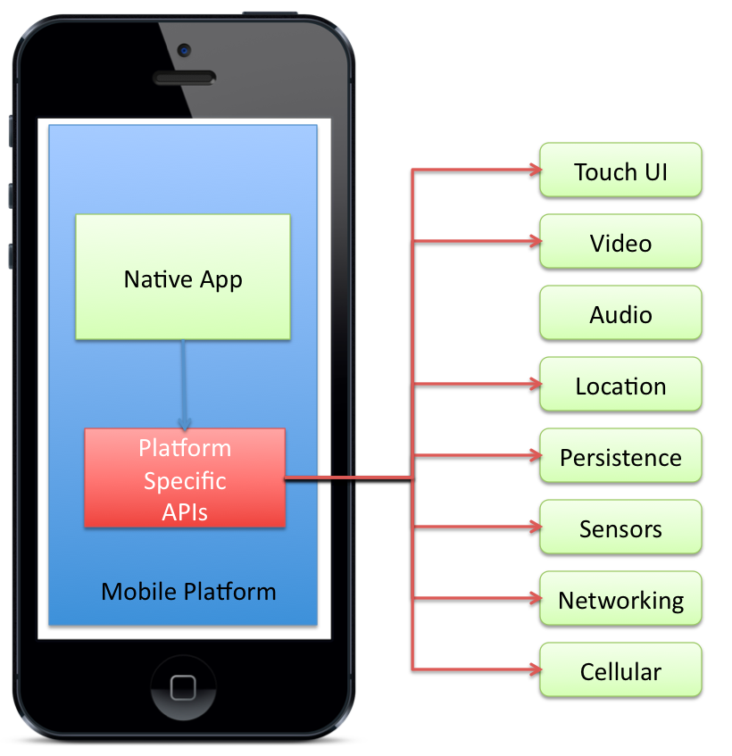Native Development flow
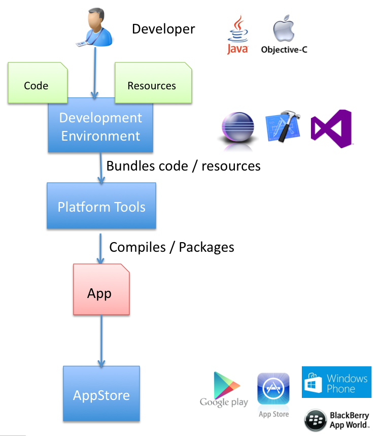Native Development Tools
The advantage of the native platform is that you have access to quality tools for :
- Developing
- Debugging
- Profiling
Native Development : Debugging
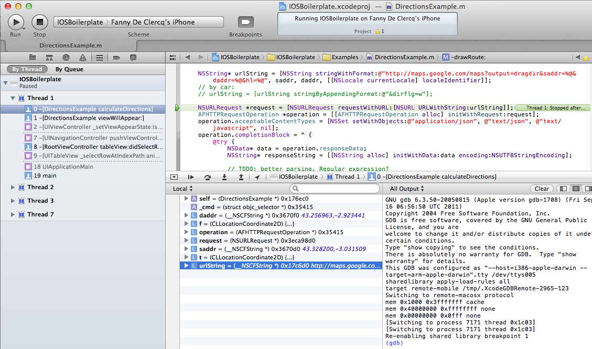Native Development : Profiling
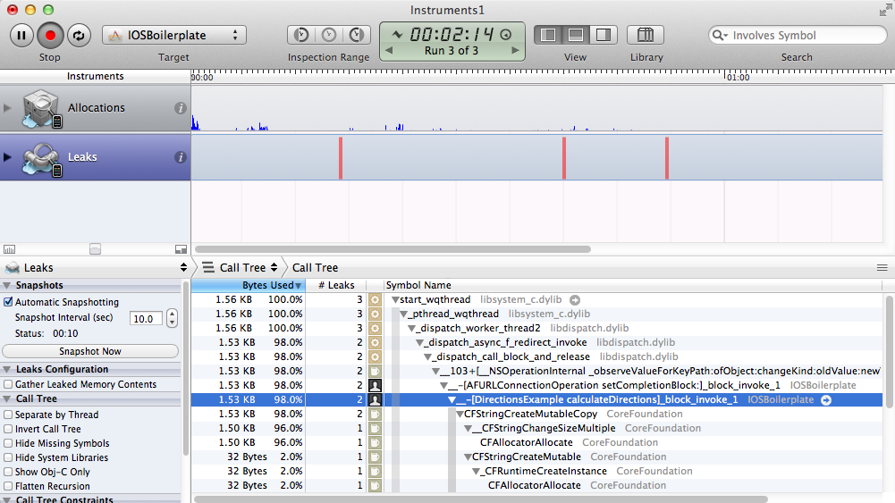Native Development : Profiling
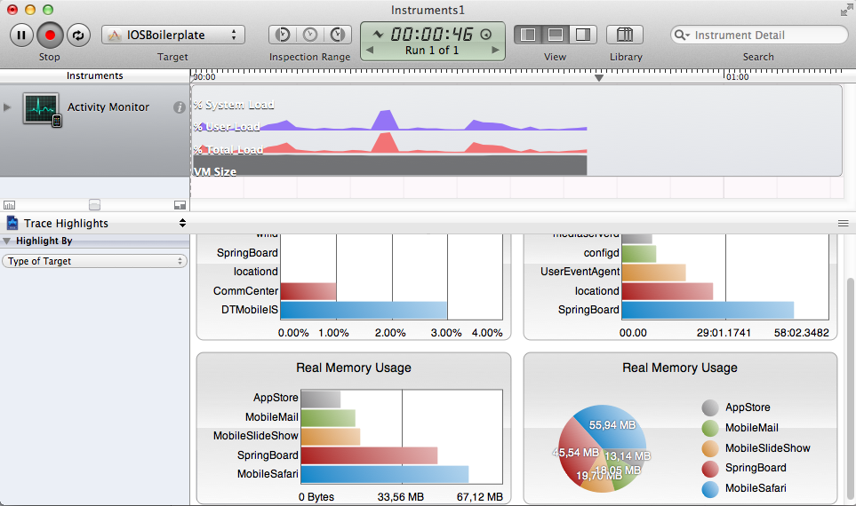Native Development Summary
| Android | iOS | Windows Phone | Blackberry | |
|---|---|---|---|---|
| IDE | Eclipse ADT / Android Studio | XCode | Visual Studio | BlackBerry IDE |
| Languages | Java / C++ | Objective-C | C# / VB.NET | Java / C++ |
| Distribution | Google Play | App Store | Windows Phone Store | Blackberry World |
| Smartphone Sales | 79 % | 13.2 % | 3.7 % | 2.9 % |
Native Development : Why
- You don't want to compromise performance / look and feel / platform affinity
- You only need to support a single or limited amount of platforms
- You have in-house knowledge of the platform
- You want to have easy distribution via an AppStore
- You're building a graphics intensive application or game
Native Development : Pros
- Consistent look and feel.
- Fits right in with the rest of the apps.
- Smooth and fast UI. No stuttering
- Taps into the full potential of the phone.
- Native tools available for developing / validating / debugging.
Native Development : Cons
- Not cross-platform. You need to start from scratch for each platform.
- Requires different mobile platform experts.
- Understanding of each mobile platform and its APIs is required.
- Requires different toolsets per platform.
- Requires different testing cycles per platform.
Mobile Web apps : What ?
- Entirely written using web technologies (HTML/CSS/JavaScript)
- Write once and run on multiple platforms
- Run inside the browser
- Iterate quickly - everything stored on the server
- Not distributed through an AppStore
Mobile Web apps : What
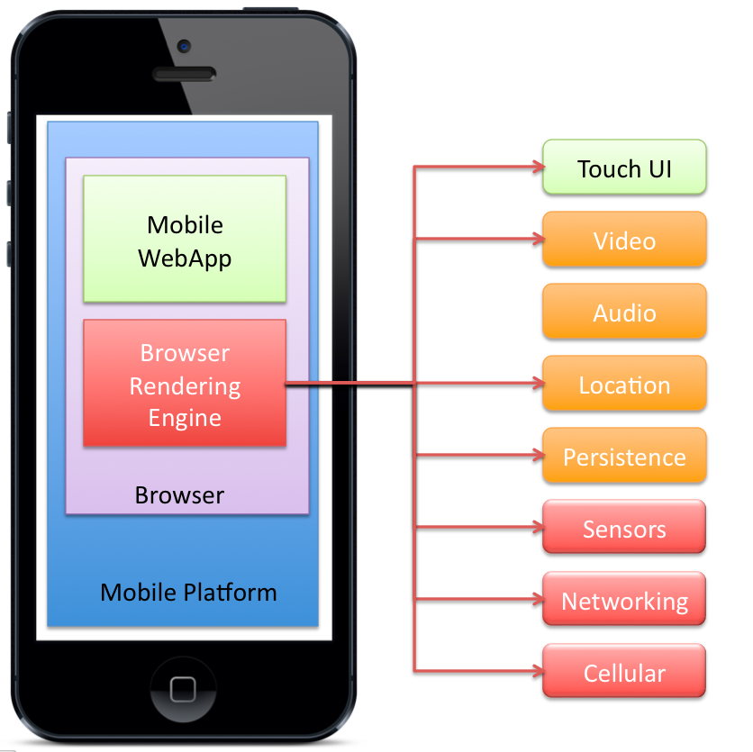Mobile Web apps : Why ?
- You already have a site using responsive design.
- You don't have the resources at hand to support different platforms
- You are not interested in AppStore distribution
Mobile WebApps : Pros
- Use standard web technologies—typically HTML5, JavaScript and CSS.
- Adding features seamlessly. Write once & deploy immediately
- No app store approval process, no development cycles for multiple platforms
Mobile WebApps : Cons
- Fragmentation challenges (Webkit versions)
- Performance of Javascript Engines
- Limitations (session management, secure offline storage)
- No or very limited access to native device functionality (camera, calendar, geolocation, etc.)
Mobile Web apps Frameworks
To build mobile web apps, you'll also need a framework and a set of tools
- JQuery Mobile (JQM)
- Sencha Touch
jQueryMobile
- DOM centric. Not javascript centric
- Very classic HTML approach
- Attribute-driven
- HTML components / wrappers
- No higher-level MVC framework
- Performance issues (animations on Android)
jQueryMobile
jQueryMobile HTML
List
... list will come here.
Footer
jQueryMobile Javascript
$(document).ready(function(e)
{
getData();
});
function getData() {
$.ajax({type: "GET",
url: "http://someUrl",
data : "callback",
dataType: "jsonp",
success : function(result)
{
console.log("success");
var list = $("#mylist");
// do something
}
}
)
}
Sencha Touch
- Javascript centric. (ExtJS framework)
- Little markup, lots of javascript
- Explicit and rich component model
- Includes a high-level MVC framework
Sencha Touch HTML
That's right ... no HTML ... only JavaScript.
Sencha Touch Javascript
Ext.setup({
onReady : function()
{
var store = Ext.create('Ext.data.Store', {
model: 'User',
proxy: {
type: 'jsonp',
url : 'http://someData',
callbackKey: 'theCallbackFunction'
}
});
store.load();
var panel;
var simplelist;
simplelist = new Ext.Component(
{
title : "simplelist",
tpl: [
'',
'',
'{item}
',
'{item}
',
'',
' '
]
}),
panel = new Ext.TabPanel
(
{
fullscreen :true,
animation : "slide",
items : [simplelist]
}
)
displayList = function()
{
var sampleitem = {item: "I am Harish"}
simplelist.update([sampleitem, sampleitem])
}
displayList();
}
}
)
Sencha Touch : Pros
- Feature-rich JS framework
- True MVC
- Built-in layouts / components
- Elaborate software suite
- Faster / smoother than jQueryMobile
Sencha Touch : Cons
- High learning curve
- Proprietary framework : lock-in
- Lots of boilerplating
- Debugging can be difficult
Building Hybrid apps using PhoneGap
Hybrid Development Flow

Hybrid Development : Why
- You have in-house expertise for HTML / JS / CSS
- You are interested in going cross-platform.
- You don't want to maintain separate code-bases.
- You don't want to write in both Java / Objective-C and C#
- You still want AppStore distribution.
- You want your app to look like a native app.
Hybrid Development : Pros
- Single codebase for multiple platforms.
- Lean and flexible. Apps can be updated on the fly.
- Perfect for prototyping
- Lots of frameworks of choose from
- Single development toolset can be chosen for all platforms.
Hybrid Development : Cons
- Lots of frameworks
- Getting an experience that is consistent with the app platform is difficult.
- Lack of tooling for debugging / profiling / validating / ....
- Differences in web standards across browsers / platforms
PhoneGap
- What is PhoneGap
- How does it work
- PhoneGap Build
- Pros / Cons
- Examples
- Live Demo
PhoneGap - What is it ?
- PhoneGap is a free and open source mobile development framework
- Allows you to create mobile apps using standardized web APIs (HTML / CSS / JS)
- Supports all major platforms (Android, iOS , Windows Phone , Blackberry, Bada, Symbian, WebOS)
- Originally developed by Nitobi Software, recently acquired by Adobe
- PhoneGap is a distribution of Apache Cordova. (Apache Cordova is the engine that powers PhoneGap)
PhoneGap - How does it work ?
- Using web APIs (HTML / CSS / JS) to build the core of your application
- PhoneGap acts as a bridge between your web-based layer and the native layer
- Allows you to access native features through plugins
- Generates a native application with an embedded webview
PhoneGap Build
- PhoneGap also comes with an online cloud-based build platform
- built on top of the PhoneGap framework
- Upload your code to PhoneGap build, and have it build native applications for you
- No need to have the platform specific build tools. Takes care of provisioning / certificates for you...
PhoneGap Build
Stability issues
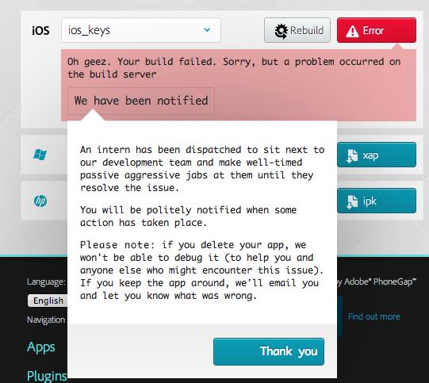PhoneGap - Installation
$ sudo npm install -g phonegap
npm http GET https://registry.npmjs.org/phonegap
npm http 200 https://registry.npmjs.org/phonegap
npm http GET https://registry.npmjs.org/phonegap/-/phonegap-3.0.0-0.14.4.tgz
npm http 200 https://registry.npmjs.org/phonegap/-/phonegap-3.0.0-0.14.4.tgz
npm http GET https://registry.npmjs.org/node-static/0.7.0
.....
DONE
PhoneGap - Creating an app
phonegap create hello com.example.hello HelloWorld
phonegap build android
And an APK is built
find . | grep apk
./platforms/android/bin/HelloWorld4-debug-unaligned.apk
./platforms/android/bin/HelloWorld4-debug-unaligned.apk.d
./platforms/android/bin/HelloWorld4-debug.apk
PhoneGap - Creating an app
The same can be done using the standard open-source Cordova command line
cordova create hello3 com.example.hello3 "HelloWorld3"
cd hello3/
cordova platform add android
cordova platform add android
cordova build
cordova run
adb install ./platforms/android/bin/HelloWorld3-debug.apk
PhoneGap - Access native features
Question : How can I access native features through PhoneGap
Answer : Install the corresponding plugin (ex: device plugin)
cordova plugin add https://git-wip-us.apache.org/repos/asf/cordova-plugin-device.git
Notice how the config.xml gets updated
And the AndroidManifest.xml
PhoneGap debugging
Question : If our mobile webapp is running inside a mobile device, how can we debug it ?
Answer : Inject some javascript into your app
Goto the following URL
http://debug.phonegap.com/client/#r4nd0m2
PhoneGap debugging
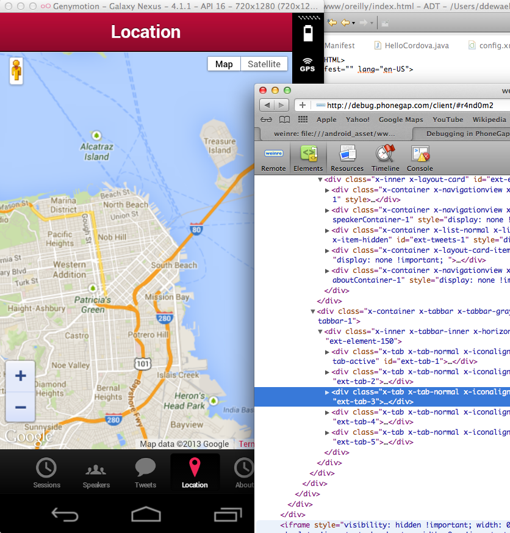Some Case Studies
Case Study : Facebook
Went from hybrid to native
- Zuckerberg admitted that it was the company’s “biggest strategic mistake” to go with HTML5 instead of a native app.
- Getting speed & smoothness right no mobile platforms proved to be very difficult
- Noticed a wider industry move away from HTML5 technology
Case Study : LinkedIn
Went from hybrid to native
- Getting animations and smoothness right turned out to be very difficult.
- Issues encountered : Tooling was lacking
- Debugging
- Memory analysis
- Operational
- Runing Diagnostics
Case Study : Xero
Went from hybrid to native
- The development was resource intensive and difficult.
- Worked with Sencha‘s development tools to build its apps
- "building a complicated mobile application in HTML5 has been hard"
- There are no "out-of-the-box" "as-good-as-native" experiences
Case Study : Untappd
Went from mobile webapp to Hybrid
- Launched with a mobile web app built in jQuery Mobile
- Wanted to have a native app in the AppStore
- Packaged their jQueryMobile based webapp into a PhoneGap app
Case Study : Financial Times
Sticking with mobile webapps
- Release updates instantly
- Not bound to rules or restrictions related to app submission
- Bookmarking
- Deploy exactly the same code to every browser, on every device.
- No need to build a separate app for each platform.
Conclusions
So how do we conclude on all of this ?
We see shifts from Hybrid to Native
- Xero
No ideal way of doing it (cliché)
You need to look at it on a case-by-case basis
Prototype
- Take some time to prototype.
- Learn web-based technologies.
- The JavaScript / CSS you need for mobile is not the same as what you need for desktop web development.
Test test test
- Make sure to test your app on as many devices as possible.
- Especially on Android.
- Make sure you have a dozen or so mobile devices available.
- Involve your collegues / friends / .....